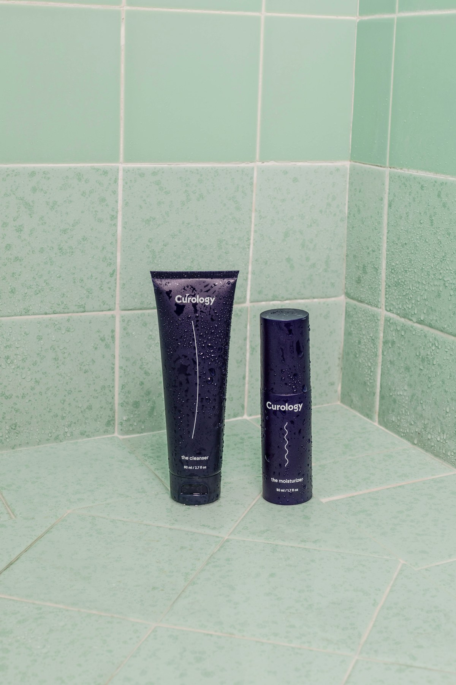

Skincare should leave room for you.
Arenne Skin is an editable working brand for a storefront built around clear roles, quiet confidence and realistic routines.

To make the shelf easier to read.
Product discovery can be beautiful without becoming vague. We organize products by category, skin behavior and highlighted ingredient role.
Because the final business name, manufacturer and verified formulas have not been supplied, this template avoids fictional founder stories, laboratories, certifications and clinical claims.
Three commitments
Explain the role
Every product should say what step it fills and who may prefer its texture.
Respect the limit
Cosmetic education is not diagnosis, treatment or a guarantee of results.
Keep routines livable
A good routine is one a person can use consistently and comfortably.
Familiar names, honest context.
We describe common ingredient functions while keeping the full formula in view. No ingredient works in isolation, and no concept list should be mistaken for verified packaging.
Explore transparencyObserve
Notice skin’s baseline patterns.
Simplify
Keep the foundation steady.
Introduce
Add one focused product.
Adjust
Respond to season and comfort.
Need a clearer shortlist?
Use the personalized consultation form to share your routine preferences.
Start an enquiry